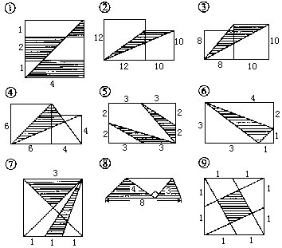
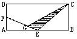
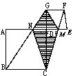
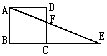
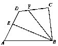
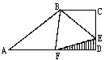
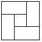
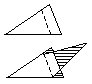
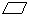
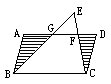

习题一
一、填空题（求下列各图中阴影部分的面积）：

二、解答题：
1.如右图，ABCD为长方形，AB=10厘米，BC=6厘米，E、F分别为AB、AD中点，且FG=2GE.求阴影部分面积。

2.如右图，正方形ABCD与正方形DEFG的边长分别为12厘米和6厘米.求四边形CMGN（阴影部分）的面积.

3.如右图，正方形ABCD的边长为5厘米，△CEF的面积比△ADF的面积大5平方厘米.求CE的长。

4.如右图，已知CF=2DF，DE=EA，三角形BCF的面积为2，四边形BEDF的面积为4.求三角形ABE的面积.

5.如右图，直角梯形ABCD的上底BC=10厘米，下底AD=14厘米，高CD＝5厘米.又三角形ABF、三角形BCE和四边形BEDF的面积相等。求三角形DEF的面积.

6.如右图，四个一样大的长方形和一个小的正方形拼成一个大正方形，其中大、小正方形的面积分别是64平方米和9平方米.求长方形的长、宽各是多少？

7.如右图，有一三角形纸片沿虚线折叠得到右下图，它的面积与原三角形面积之比为2：3，已知阴影部分的面积为5平方厘米.求原三角形面积.

8.如右图，ABCD的边长BC=10，直角三角形BCE的直角边EC长8，已知阴影部分的面积比△EFG的面积大10.求CF的长.
